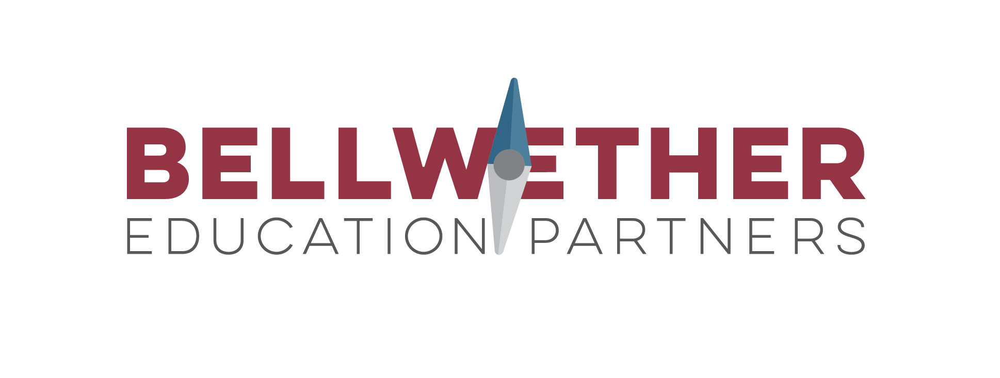

Bellwether Education Finance Equity Training, Summer 2022
This page will be your primary source for class lectures, instructions, and sample data.
This hands-on training covers two tracks of content:
- An examination of education finance policy with a specific focus on how state policy can support or hinder adequate & equitable funding for public schools.
- How to use R, an open-source software package, for exploring, visualizing, and modeling education finance data.
Participants will:
- Learn best practices for importing and cleaning data and processing it into datasets.
- Develop techniques for answering common research questions.
- Visualize the analysis, and export the results as static or interactive tables, plots, and maps.
- Create an interactive notebook or dashboard to share results in a visually compelling way using R Shiny or RPubs.
- Complete and visualize a data project through a capstone that uses R to tie together skills learned in the course.
Before the course
We'll add other tools as we progress through the course, but for the first day you'll need to install and/or sign-up for:
- R programming language
- R Studio Desktop to write in the R programming language in a more user-friendly way
In order to make sure you have plenty of time to trouble-shoot any technical issues before the workshop, please install R and RStudio on your computer by EOD Tuesday, June 13. If you already have R and R Studio on your machine, please update your install to the current version of R (4.2.0+) and R Studio (2022.02.3+).
Course 1
Schedule
- Class: June 13 - August 30, Tuesdays 12-2pm ET (typically)
- Office Hours: Fridays 11am - 12pm ET, and by appointment
- Capstone Project: August 16 - August 30
Instructors
Class Information
- Class 1: Intro to R and RStudio
- Class 2: Data exploration with the tidyverse
- Class 3: Data wrangling
- Class 4: Analysis and modeling
- Class 5: Visualization
- Class 6: Analysis and modeling 2, writing equations and functions
- Class 7: Visualization 2, interactive plots and maps
- Class 8: Intro to R Shiny
- Capstone Project
Access files and information for each class, including lecture recordings, data, scripts, and assignments, below.
Class 1
Learning Goals
- Course overview
- Introduction to educaiton finance
- Introduction to R
- RStudio overview and tips
Resources